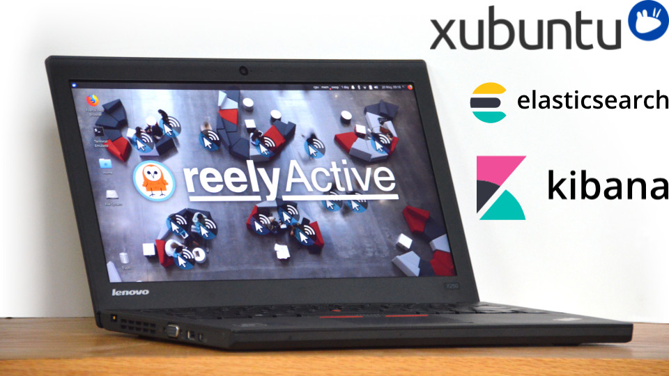

Prepare a reelyActive laptop from scratch
Our step-by-step guide to prepare a laptop with the minimum prerequisites for our open source software.
The TL;DR (Too Long; Didn't Read)
Learn how we at reelyActive prepare a laptop, starting with a Xubuntu installation, to efficiently run our open source software.
- What will this accomplish?
- A Xubuntu-based laptop with everything to support reelyActive's open source software suite.
- Is there an easier way?
- Ask us for a quote to prepare one for you as part of a PoC.
- So why would I read this?
- It's actually a rather straightforward process, and could even be useful for other projects.
Installing Xubuntu 18.04 LTS Step 1 of 4
Download Xubuntu 18.04 LTS and install it as the primary operating system of the laptop.
- Why Xubuntu?
- The Ubuntu family of Linux distributions are popular and well supported. Xubuntu uses the lighter Xfce desktop environment, well suited to the system requirements.
- Why 18.04 LTS?
- It's the latest Long-Term-Support version at the time of writing.
Download Xubuntu 18.04 LTS Part 1
From any Internet-connected computer :
- Browse to xubuntu.org/download/
- Scroll to find the LTS version (18.04)
- Download the 64-bit version via Torrent or a local mirror, as you prefer
- Burn the ISO file to a bootable USB drive or a DVD , as you prefer (search online for instructions specific to your case and operating system)
You should now have Xubuntu 18.04 LTS on a bootable media that the target laptop can accept. Let's install!
Install Xubuntu 18.04 LTS Part 2
Boot the target laptop with the Xubuntu 18.04 LTS installation media and, when prompted, select the option to Install Xubuntu (rather than simply Try Xubuntu). Then,
- Select English as the language
- Select the English (US) keyboard , unless the laptop has another
- Select the option to connect to a WiFi network, if available, and enter the credentials
- Select Download updates while installing Xubuntu but do not select the option to install third-party software
- Select the installation type: on a laptop with virgin hard drive, simply Erase disk and install Xubuntu (if another operating system is present, take great care to select an appropriate configuration!)
Xubuntu will now be written to the hard disk. In parallel, there will be prompts to configure personalisation settings.
Enter personal settings Part 3
While Xubuntu is being written to the hard disk, complete the following when prompted:
- Select the time zone in which the system will be used
- Enter reelyActive as your name
- Enter reelyActive-XXX as your computer's name, replacing XXX with the model of the laptop , for example X250
- Enter reelyactive as the username
- Enter owl-in-one as the password, or a stronger and more appropriate password
- Select the option to Require my password to log in
Wait for the installation to complete, and when prompted, remove the installation media and restart. Xubuntu 18.04 LTS is now installed and configured!
Installing Elasticsearch 7.x Step 2 of 4
Install Elasticsearch 7.x with Java as a prerequisite, and configure to run on boot.
- Why Elasticsearch?
- Elasticsearch is a versatile, open source database well suited to the needs of the reelyActive open source software stack.
- Why run on boot?
- For convenience of course!
Once the laptop has booted up, ensure it is connected to the Internet.
Install Java Part 1
Open a terminal and then:
- Update the list of available packages and their versions with the command
sudo apt update - Install Java with the command
sudo apt install default-jdk
Configure the Elastic APT repository Part 2
Open a terminal and then:
- Import the Elasticsearch PGP key with the command
wget -qO - https://artifacts.elastic.co/GPG-KEY-elasticsearch | sudo apt-key add - - Install the prerequisite transport package with the command
sudo apt-get install apt-transport-https - Add the location of the Elastic APT repository with the command
echo "deb https://artifacts.elastic.co/packages/7.x/apt stable main" | sudo tee -a /etc/apt/sources.list.d/elastic-7.x.list
Xubuntu now knows where to find and how to download the Elasticsearch and Kibana APT packages.
Install Elasticsearch 7.x Part 3
Open a terminal then install Elasticsearch 7.x with the command sudo apt-get update && sudo apt-get install elasticsearch
Elasticsearch is now installed.
Enable the Elasticsearch service Part 4
Open a terminal and then:
- Reload the systemctl daemon with the command
sudo /bin/systemctl daemon-reload - Enable the Elasticsearch service with the command
sudo /bin/systemctl enable elasticsearch.service
Elasticsearch will automatically start the next time the laptop is restarted.
Configure Elasticsearch 7.x Part 5
Open a terminal then open the elasticsearch.yml file for editing with the command sudo nano /etc/elasticsearch/elasticsearch.yml and paste in the following lines:
http.cors.enabled: true
http.cors.allow-origin: /https?:\/\/localhost(:[0-9]+)?/
http.cors.allow-methods: GET, POST
path.repo: ["/var/backups/elasticsearch"]This will allow API access to Elasticsearch by software, such as the reelyActive open source software, running on the same machine (localhost). This will also specify the path for backups, a folder that must be created as follows:
- Change to the var/backups folder with the command
cd /var/backups - Create the elasticsearch backups folder with the command
sudo mkdir elasticsearch - Change the owner of the folder to the elasticsearch user with the command
sudo chown -R elasticsearch:elasticsearch elasticsearch
Elasticsearch is now installed and configured.
Installing Kibana 7.x Step 3 of 4
Install Kibana 7.x, and configure to run on boot.
- Why Kibana?
- Kibana provides a powerful window into the data stored in Elasticsearch, including visualisations, dashboards and facilitating database queries and management.
- Why run on boot?
- For convenience of course!
This step assumes that the previous step, Installing Elasticsearch 7.x, is already completed.
Install Kibana Part 1
Open a terminal then install Kibana with the command sudo apt-get update && sudo apt-get install kibana.
Kibana is now installed.
Enable the Kibana service Part 2
Open a terminal and then:
- Reload the systemctl daemon with the command
sudo /bin/systemctl daemon-reload - Enable the Kibana service with the command
sudo /bin/systemctl enable kibana.service
Kibana will automatically start the next time the laptop is restarted.
Procedure to come...
The laptop is prepared for installation of the reelyActive open source software suite, which is the subject of the next tutorial:
Do you like this document template?
It's based on Bootstrap 4 MIT and Font Awesome 5 (Free) MIT. Our Web Style Guide MIT has all the details. Sharing and feedback are encouraged!
reelyActive's Web Style GuideWhere to next?
Continue exploring our open architecture and all its applications.
-

Install our open source software suite on a laptop
Our step-by-step guide to run reelyActive's open source software suite on a laptop or personal computer. -

Prepare a Raspberry Pi from scratch
Our step-by-step guide to prepare a lean yet versatile SD card image for the Pi. -

diyActive Home
The home for reelyActive developers.